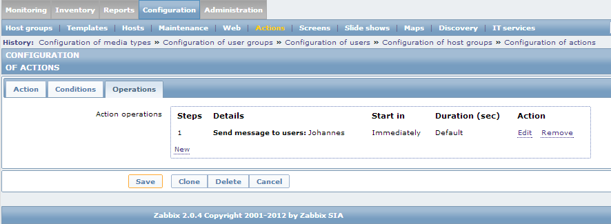

ZAX is hosted on GitHub
Welcome to ZAX
ZAX is a mobile frontend for the Zabbix enterprise monitoring system. It is free and has no limits.
This app shows you not only active triggers, events and latest item data, but has a few more features:
Features
- view current problems
- view events
- view latest Items
- view screens
- mark events as acknowledged
- history for items (graphs)
- push notifications - trigger updates in realtime
- filter events and problems by hostgroup and/or severity
- two homescreen widgets (1x1 and list problem widget)
- share problems, events and items with your colleagues
- light and dark theme
- HTTP auth for proxy
- HTTPS/SSL connection (trusted and optionally untrusted)
- Zabbix 2.x support
- ad-free

Setup Push Notifications
ZAX supports push-messages via PubNub and Google Cloud Messaging.
For notifications via Pubnub, you need an account for PubNub, a realtime push service. Sign up for free at http://www.pubnub.com/ if you don’t have an existing account.
-
Download pubnub.pl and open it with an editor. Replace the values of the $pubkey and $subkey variables with your keys from http://www.pubnub.com/account#api-keys. Please use your full keys containing the "sub-c-" and "pub-c-" prefixes, respectively.
-
On your Zabbix server, make shure the Perl package LWP::Simple is installed. If it is not, you can install it via:
# perl -MCPAN -e'install "LWP::Simple"'
or the package libwww-perl on Debian-based systems.
For notifications via Google Cloud Messaging (GCM), you need a server that can recieve registration-IDs from the device and send messages from Zabbix to the device via GCM. We provide a simple implementation of such a server as a WSGI-Script. See GCM Server on how to deploy that server.
-
Download gcm.pl and open it with an editor. Change the value of the $url variable to point to your GCM-Push-Server.
-
On your Zabbix server, make shure the Perl packages LWP::Simple and LWP::UserAgent are installed. If they are not, you can install them via:
# perl -MCPAN -e'install "LWP::Simple","LWP::UserAgent"'
or the package libwww-perl on Debian-based systems.
-
Copy the pubnub.pl / gcm.pl file into the Zabbix AlertScriptPath. By default, the AlertScriptsPath is set to be /usr/local/share/zabbix/alertscripts,for Zabbix 2.x, and /home/zabbix/bin, for Zabbix 1.8.x; however, it can be changed using the zabbix_server.conf file. If you don’t know your path, check your zabbix_server.conf file.
-
Make sure all access rights are set correctly, so that zabbix can execute your script.
Open the Zabbix web frontend.
Go to Administration -> Media types. Create a new Media type for the script pubnub.pl/gcm.pl.
Zabbix 1.8
Zabbix 2.0
Go to Administration -> Users. Add for your user the Media type you created before.
Zabbix 1.8
Zabbix 2.0
Go to Configuration -> Actions. Create an action for a trigger that sends a message to your user.
Important: subject and message must be set to:
{TRIGGER.ID}
Default message:
status={STATUS}
message={HOSTNAME}: {TRIGGER.NAME}: {STATUS}
Zabbix 1.8

Zabbix 2.0
Apart from the Zabbix parameters ({STATUS} etc.), please do not use square brackets ('[',']') or curly brackets ('{','}') as they may lead to nesting issues. (see https://github.com/inovex/zax/issues/8)
Google Cloud Messaging Server
For more generall information on Cloud Messaging see Googles documentation
Our server for Google Cloud Messaging consists of three files:
- gcm-push-server.py - the server
- gcm-server-config.json - config-file, contains API-key
- gcm.db - sqlite database file, will be created by the server if it does not already exist
To obtain an API-Key you need to create a project with Cloud Messaging support. You can do that via the "get a configuration file"-button on https://developers.google.com/cloud-messaging/android/start.
You will recieve a server-API-key and a sender-ID. The server-API-key needs to be added to your config file. The sender-ID must be entered in the App-Settings under "GCM Sender ID".
You will need the python-module gcm-client to run the server. It can be installed via pip:
# pip install gcm-client
One way to deploy the server is Apache with mod_wsgi. For an example vhost configuration see here. For more information about mod_wsgi see: http://modwsgi.readthedocs.org/
Feedback
For support, feature requests or any other feedback, please create a ticket at the GitHub project issue page. Alternatively, you can send us a mail to list-apps@inovex.de.Imprint
inovex GmbH
Karlsruher Straße 71
D-75179 Pforzheim
Tel +49.(0)7231.3191-0
Fax +49.(0)7231.3191-91
info@inovex.de
Business Manager: Stephan Müller
Registered Office: Pforzheim
AG Mannheim, HRB 502126
USt-ID according to § 27 a Umsatzsteuergesetz: DE 144 196 117